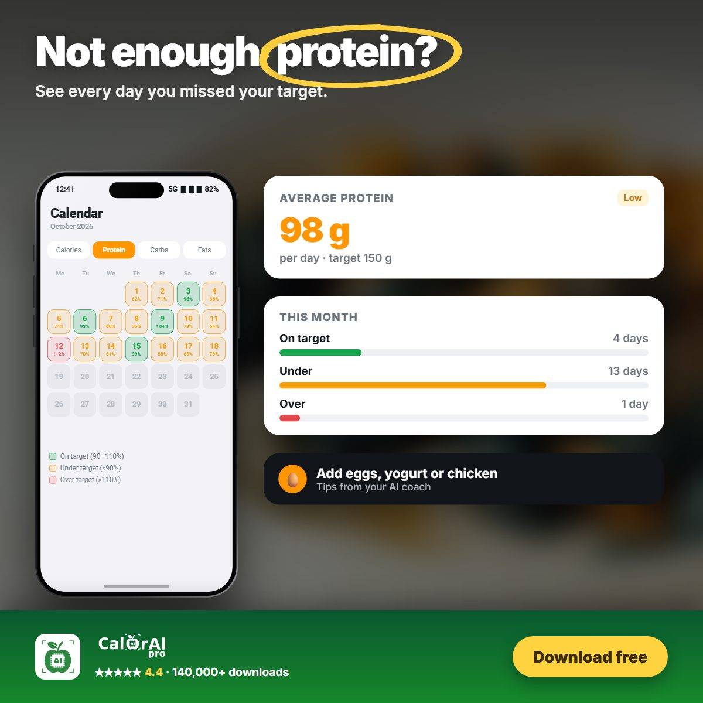

Protein helps build and repair muscle, keeps you full and supports almost every process in the body. Yet many people have no idea how much they eat, or how much they should eat. Let's look at what the research says.
The minimum: 0.8 g per kg of body weight
The Recommended Dietary Allowance (RDA) for adults is 0.8 grams of protein per kilogram of body weight per day[1]. For a 70 kg adult, that is about 56 g a day.
It is important to understand what this number means: the RDA is the amount that meets the basic needs of nearly all healthy adults. It is a minimum to avoid deficiency, not necessarily the best amount for building muscle or losing fat.
If you exercise: about 1.4–2.0 g per kg
For people who do regular exercise, the International Society of Sports Nutrition recommends 1.4–2.0 g of protein per kg per day[2]. A meta-analysis of 49 studies on resistance training found that extra protein increased gains in muscle mass and strength, with the benefit levelling off at around 1.6 g per kg per day[3].
If you are losing weight: protein helps you keep muscle
When you eat fewer calories, your body can lose muscle as well as fat. Research reviews show that higher-protein diets (roughly 1.2–1.6 g per kg) can help people feel fuller, keep more lean muscle and improve body composition during weight loss[4].
| Your situation | Protein per kg per day | Example: 70 kg person |
|---|---|---|
| Minimum for healthy adults (RDA) | 0.8 g | about 56 g |
| Losing weight | 1.2–1.6 g | about 84–112 g |
| Regular strength training | 1.4–2.0 g | about 98–140 g |
How much protein is in common foods?
Typical values from nutrient databases[5]:
- 1 large egg: about 6 g
- 100 g cooked chicken breast: about 30 g
- 100 g salmon: about 20–25 g
- 170 g (one pot) plain Greek yogurt: about 15–17 g
- 100 g cooked lentils: about 9 g
- 100 g firm tofu: about 12–17 g
Simple ways to reach your target
- Spread it out. Aim for a protein source at every meal instead of one big portion at dinner.
- Upgrade breakfast. Eggs, Greek yogurt or cottage cheese can add 20–30 g before lunch.
- Keep easy snacks around: yogurt, cheese, nuts, edamame or a protein shake.
- Track it. Most people overestimate how much protein they eat until they measure it.

CalorAI calculates protein for every meal you log, whether you snap a photo, type it or say it. The protein calendar shows each day as on target, under or over, and the AI coach can suggest foods that close the gap, for example "add eggs, yogurt or chicken" when you are low.

Hit your protein goal every day
CalorAI tracks protein in every meal and shows the days you missed your target.
Sources
- Institute of Medicine (National Academies). Dietary Reference Intakes for Energy, Carbohydrate, Fiber, Fat, Fatty Acids, Cholesterol, Protein, and Amino Acids. Washington, DC: National Academies Press; 2005. doi.org/10.17226/10490
- Jäger R, Kerksick CM, Campbell BI, et al. "International Society of Sports Nutrition Position Stand: protein and exercise." Journal of the International Society of Sports Nutrition. 2017;14:20. doi.org/10.1186/s12970-017-0177-8
- Morton RW, Murphy KT, McKellar SR, et al. "A systematic review, meta-analysis and meta-regression of the effect of protein supplementation on resistance training-induced gains in muscle mass and strength in healthy adults." British Journal of Sports Medicine. 2018;52(6):376–384. doi.org/10.1136/bjsports-2017-097608
- Leidy HJ, Clifton PM, Astrup A, et al. "The role of protein in weight loss and maintenance." American Journal of Clinical Nutrition. 2015;101(6):1320S–1329S. doi.org/10.3945/ajcn.114.084038
- U.S. Department of Agriculture, Agricultural Research Service. "FoodData Central." fdc.nal.usda.gov
This article is for general information and is not medical advice. Talk to a doctor or registered dietitian before making major changes to your diet, especially if you have a medical condition, allergy, or are pregnant.